航天产品
航天器
介绍：航天器（spacecraft），又称空间飞行器、太空飞行器。按照天体力学的规律在太空运行， 执行探索、开发、利用太空和天体等特定任务的各类飞行器。航天器基本上都在太阳系内运行。


飞船
宇宙飞船（space craft，spaceship），是一种运送航天员、货物到达太空并安全返回的航天器。宇宙飞船可分为一次性使用与可重复使用两种类型。 用运载火箭把飞船送入地球卫星轨道运行，然后再入大气层。


 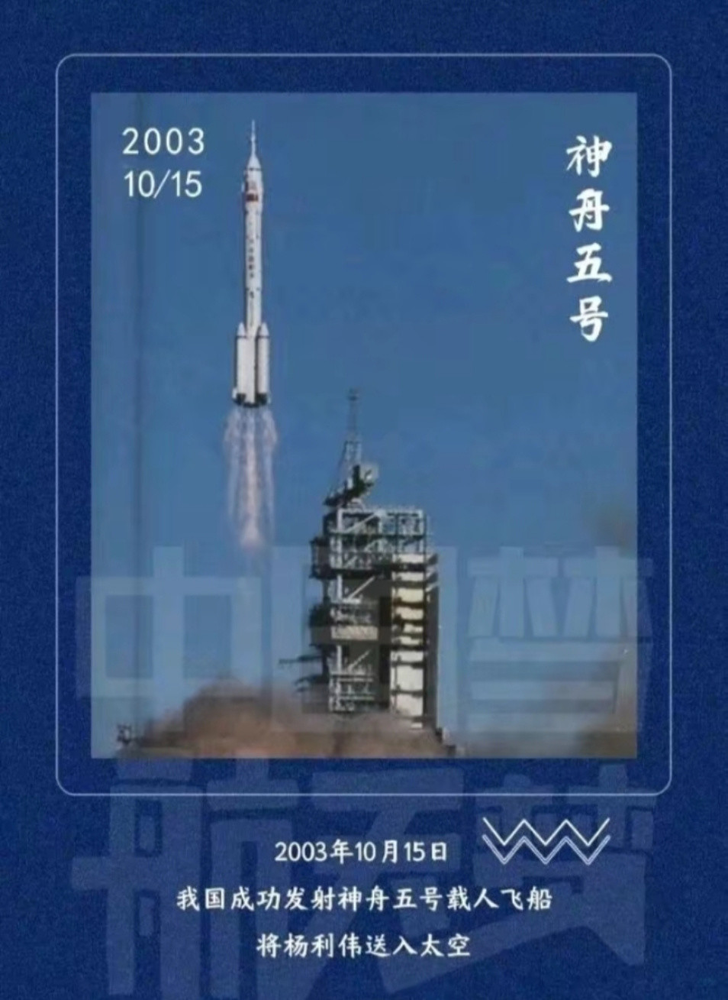
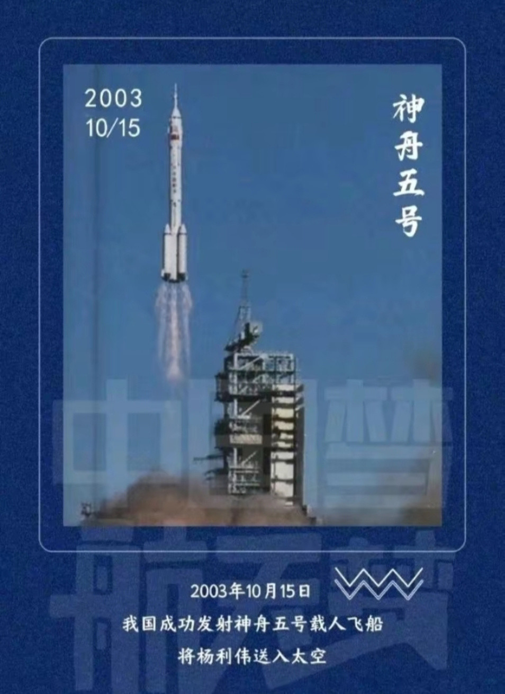
 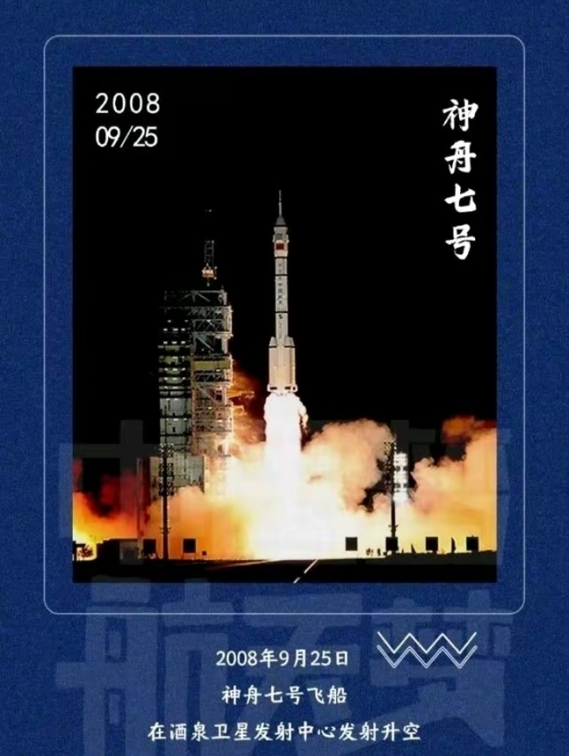
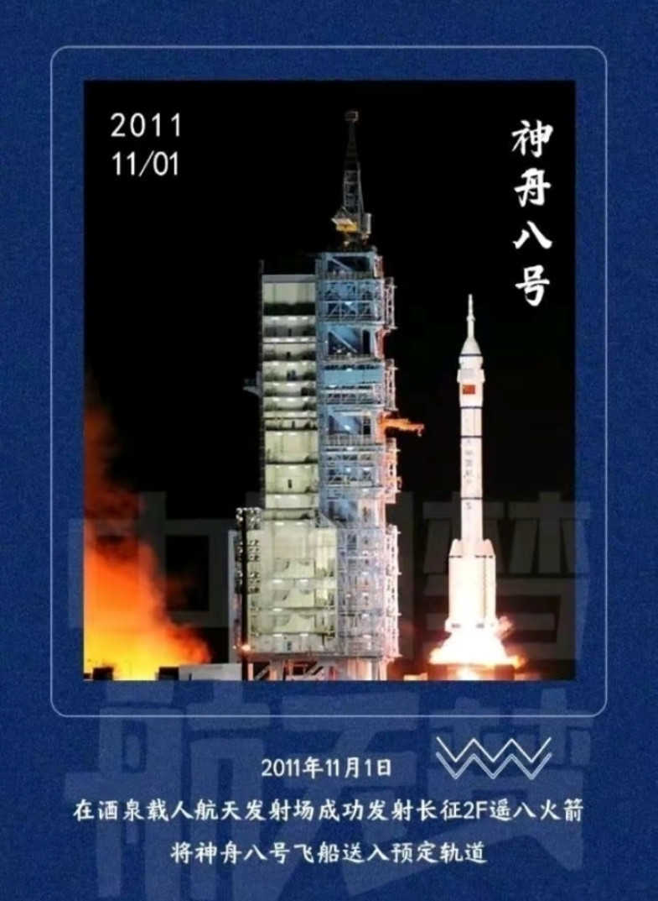
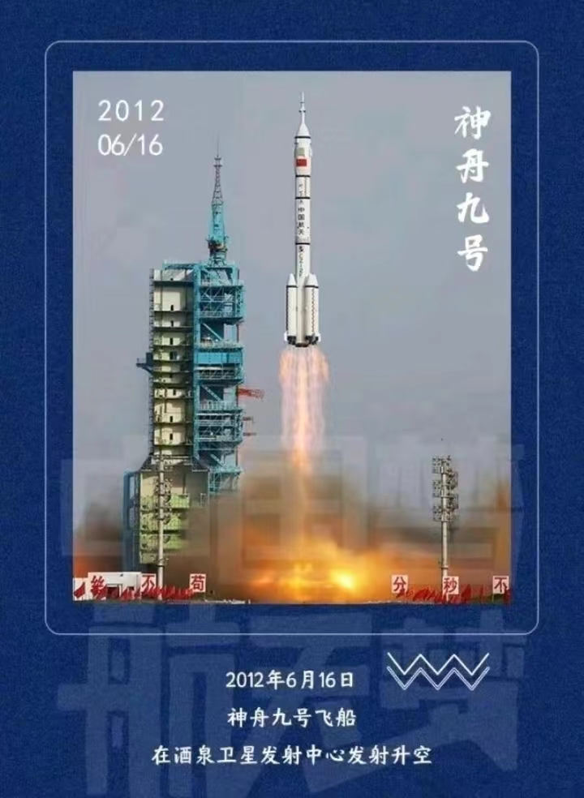
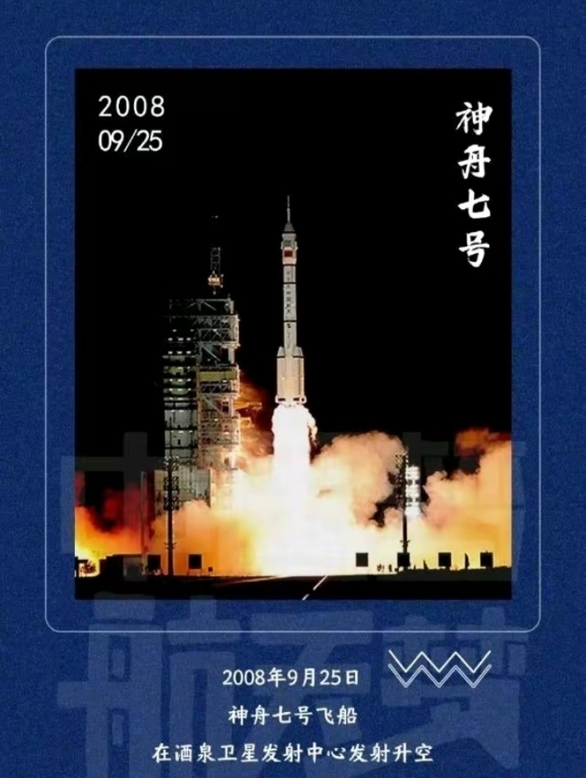
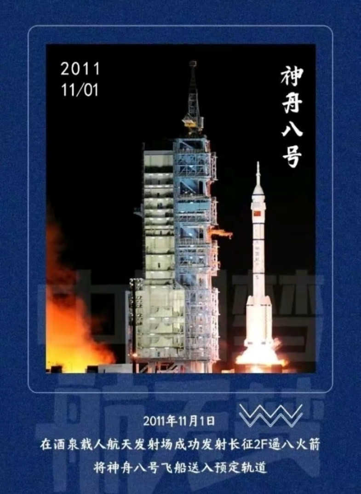
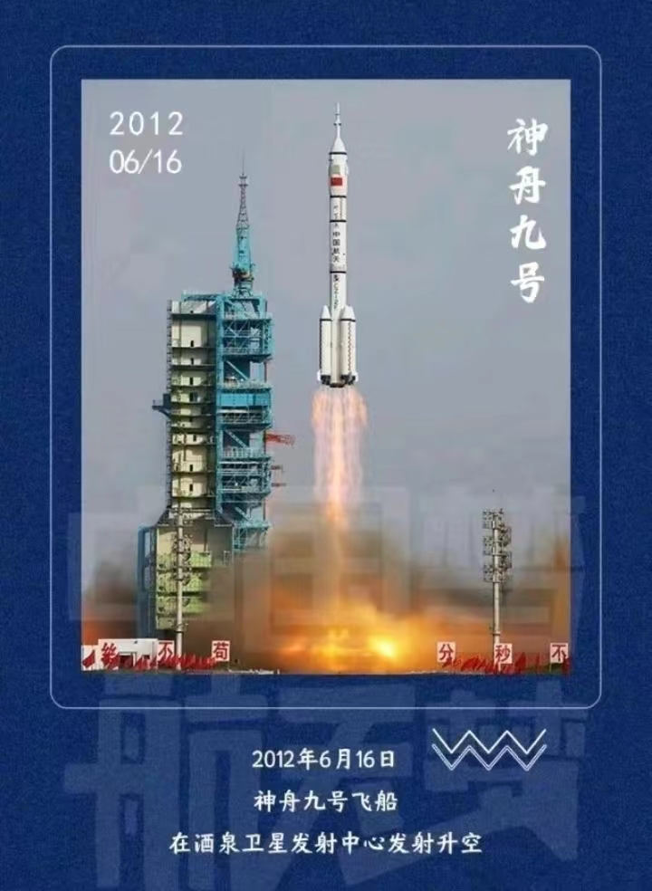
 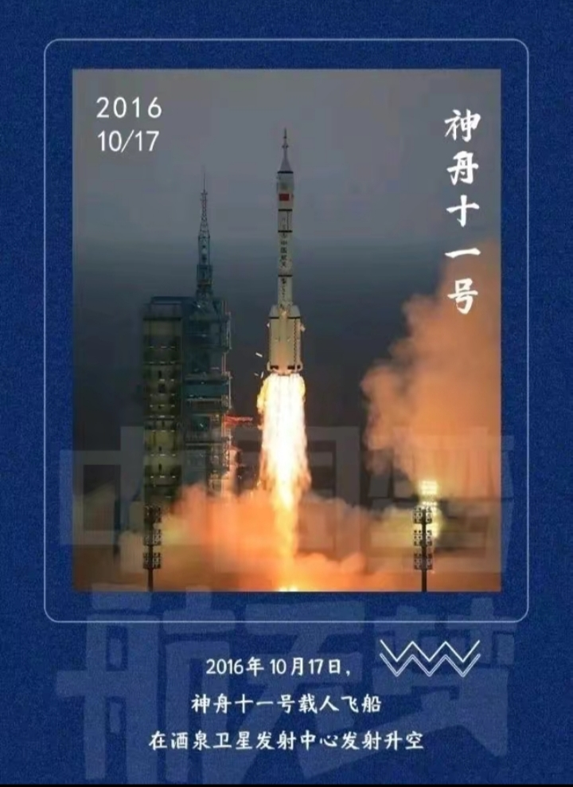
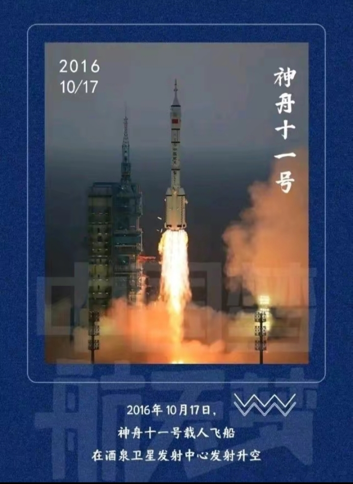

卫星
卫星是指在围绕一颗行星轨道并按闭合轨道做周期性运行的天然天体，人造卫星一般亦可称为卫星。 人造卫星是由人类建造，以太空飞行载具如火箭、航天飞机等发射到太空中，像天然卫星一样环绕地球或其它行星的装置。
 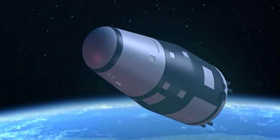
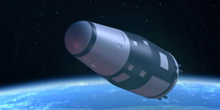


火箭
火箭（rocket）是火箭发动机喷射工质（工作介质）产生的反作用力向前推进的飞行器。 它自身携带全部推进剂，不依赖外界工质产生推力，可以在稠密大气层内，也可以在稠密大气层外飞行， 是实现航天飞行的运载工具。火箭按用途分为探空火箭和运载火箭。
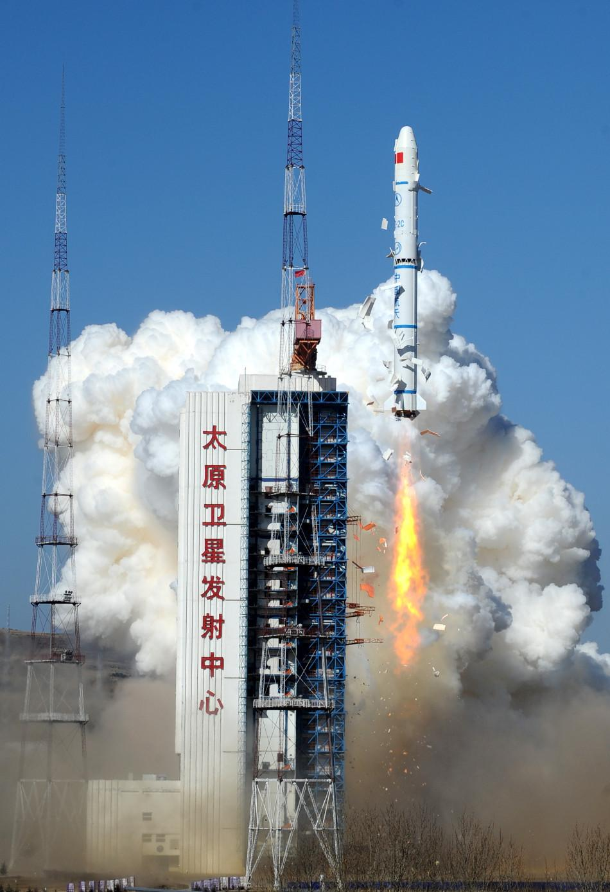 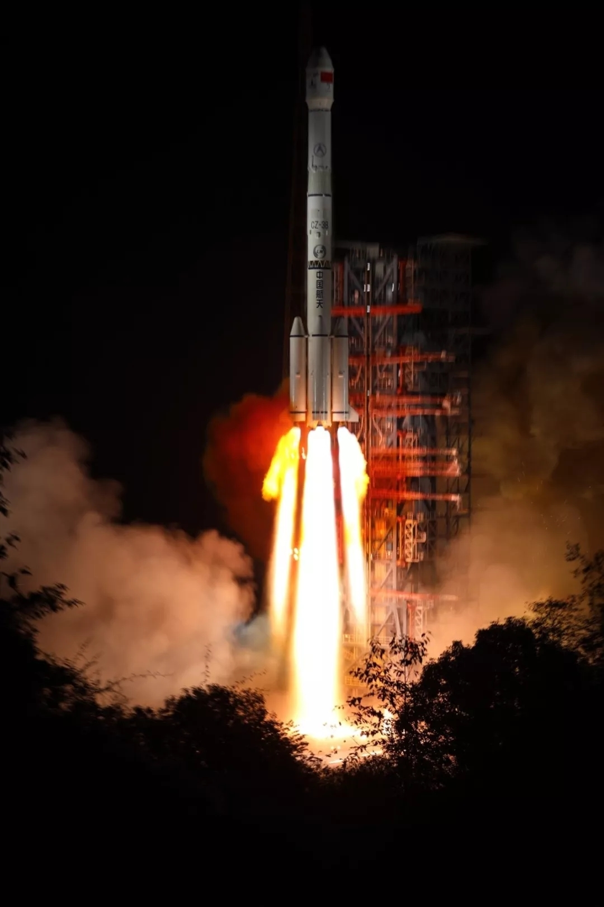